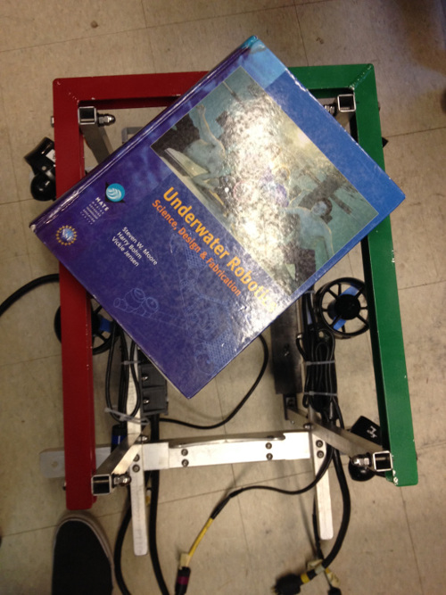
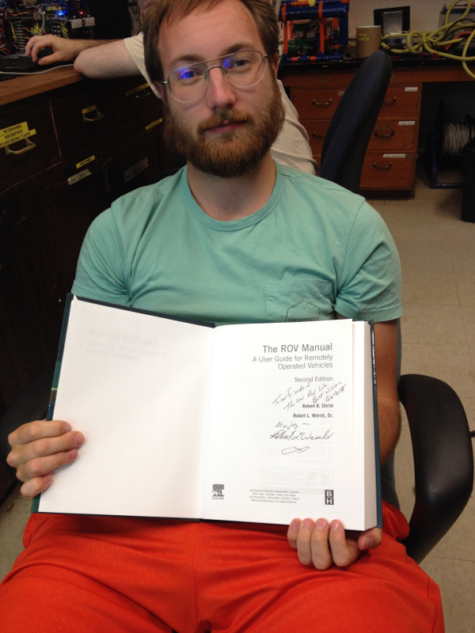
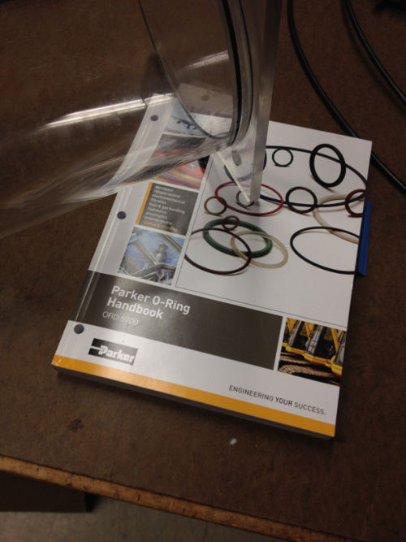

Technical Information UWROV
Welcome to the page of the UWROV Technical Information!
This page features technical reports submitted to the MATE competition and other miscellaneous documents that may be of interest. If you are interested in building an ROV for the first time, click here to check out our page on PVC ROVs.
Enjoy the image at left of the Woods Hole Oceanographic Institution's ROV Jason, taken by one of the UWROV team members while Jason was onboard the RV Thomas G. Thompson while docked in Portage Bay at the UW-Seattle campus.
Download our technical report from the 2012 MATE competition
Download our technical report from the 2014 MATE competition
Download our technical report from the 2015 MATE competitionTechnical Resources
Underwater Robotics (Textbook)

One useful text written for the high-school and college level is the “Underwater Robotics: Science, Design & Fabrication” by Dr. Steven W. Moore, Harry Bohm, and Vickie Jensen. The hardcover book was published in 2010 and is 770 pages long. It is available for purchase from the Marine Advanced Technology (MATE) Center by clicking this button.
The ROV Manual

“The ROV Manual” by Robert D Christ and Robert L. Wernli Sr is written for marine and offshore engineers and technicians using ROVs, but is also well-suited for the UWROV team. The second edition was published in 2013 and is 712 pages long. The hardcover book is available for purchase from a Seattle-based company and University of Washington donor by clicking this button.
O-Ring Handbooks

Parker Hannifin Corporation publishes the “Parker O-Ring Handbook” which is what UWROV references when designing O-ring glands. The 50th edition of the handbook, published in 2007, is available from Parker as a 292-page PDF by clicking this button (5.87 MB).
A second resource that is useful for designing O-ring seals is the technical handbook published by Eriks. The 2013 edition available from Eriks as a 256-page PDF by clicking this button (11.4 MB).
Acrylic Information
Jerry Stachiw’s “Handbook of Acrylics for Submersibles, Hyperbaric Chambers and Aquaria” is the foremost text on the subject and is particularly useful for UWROV. Published in 2003, the 1080-page long hardcover book is available for purchase by clicking this button.
The same author wrote “Acrylic Plastic Viewports For Ocean Engineering Applications” in 1977. The document is approved for public release by the Defense Technical Information Center (DTCI), which is a Department of Defense Field Activity. The documents is available from DTCI, where it is broken up into three separate PDF files. It can be accessed from DTCI by clicking this button for chapters 1 – 10 (146 MB), this button for chapters 11 – 15 (145 MB), and this button for the appendices (86.1 MB).
(Please note that these files are unusually large and may take several minutes to download.)
UWROV PowerPoint Presentations
Several brief PowerPoint presentations created by members of the UWROV team are available below. Note, however that many of the slides in these presentations contain animations so that multiple pictures can be shown next to a single body of text. This is especially noticeable in the section on bolting in the “Mechanical” slides. The optimal way to view these presentations is by downloading them as PowerPoint files and viewing them as slideshows.
Recommend Reading From ASME
The American Society of Mechanical Engineers (ASME) recommends these three books for engineering students, which are reviewed in brief below.
Zen and the Art of Motorcycle Maintenance by Robert M. Pirsig (1974) is a 540-page novelistic autobiography. The text is largely a philosophical piece, drawing on Western, Eastern and ancient Greek philosophy. While it bears little outward relation to the discipline of engineering itself, the central theme regarding the question “What is quality?” may be of interest to all. Pirsig is largely known for his authorship of this book and its sequel, Lila.
To Engineer is Human by Henry Petroski (1982) is a 251-page book about the risks and failures in engineering design. Examining cases ranging from the Hyatt Regency Hotel disaster to his personal set of kitchen knives, Petroski gives a wide array of examples and explanations of engineering failures and successes. Petroski also draws from discussions of engineering failure in society, citing cartoons, novels and even poetry, making the book a balanced and thought-provoking read. Petroski is a Professor of Civil Engineering at Duke University in Durham, North Carolina.
The Design of Everyday Things by Don Norman (Revised & Expanded Edition 2013) is a 347-page book on human factors design. Norman draws extensively from his background in psychology and engineering, and gives numerous examples of bad design and its consequences that are encountered in everyday life. Moreover, Norman imparts on the reader a way of thinking about design to prevent human error. Norman is the director of The Design Lab at the University of California, San_Diego.
More Recommended Reading

In addition, one of the club members provides a recommended reading list that may be of particular interest to students of Industrial Engineering.
The Checklist Manifesto by Atul Gawande (2009) is a 215-page book about the design and implementation of surgical safety checklists. The text is particularly relevant to the University of Washington community, as the UW Medical Center was selected as one of the eight hospitals where the study regarding surgical safety checklists was conducted. Moreover, the book describes how aspects of surgical safety checklists were inspired by flight checklists written by Seattle’s Boeing Company. Gawande is a general and endocrine surgeon at Brigham and Woman’s Hospital in Boston, Massachusetts and an associate professor at Harvard Medical School and the Harvard School of Public Health in Cambridge, Massachusetts.
In Pursuit of the Traveling Salesman by William J. Cook (2012) is a 228-page book about the traveling salesman problem, one of the most famous and intensely studied problems in applied mathematics. Those studying operations research will find the Cook’s visual explanations of linear programming, cutting planes and branching particularly useful. The text also serves as an overview of the limitations and challenges of big computing. The origins and applications of the Traveling Salesman problem will be of interest to all. Cook is a professor at the University of Waterloo in Waterloo, Ontario, and was one of the developers of the “Concorde” code to solve traveling salesman problems.
Long-Range Forecasting by J. Scott Armstrong (1978) is a 612-page technical book. As stated in the front matter, one of the objectives was to write a book that is readable and fun to read. Armstrong injects humor throughout in a stark departure from more traditional technical book, and making the text truly enjoyable and the information very practical. The book summarizes empirical research on forecasting and helps the reader select the most appropriate methods for a given forecasting problem and tells the reader how to evaluate forecasting models. Examples are given from a variety of fields. Armstrong is a Professor of Marketing at the University of Pennsylvania’s Wharton School in Philadelphia, Pennsylvania.
The Toyota Way by Jeffrey K. Liker (2004) is a 330-page business text outlining the Toyota Production System, which is the basis for modern-day Lean manufacturing that has become the gold standard in manufacturing management. Liker explains the history of Toyota and the development of their production system, and then outlines how each of the fourteen principles of the system are applied at Toyota and other companies. Liker is a Professor of Industrial and Operations Engineering at the University of Michigan in Ann Arbor, Michigan.